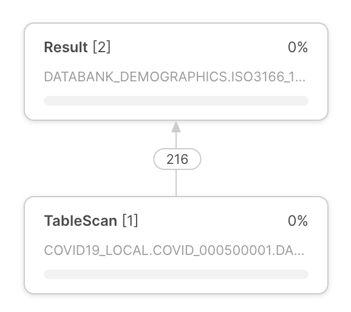
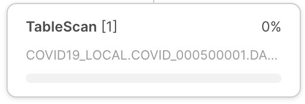
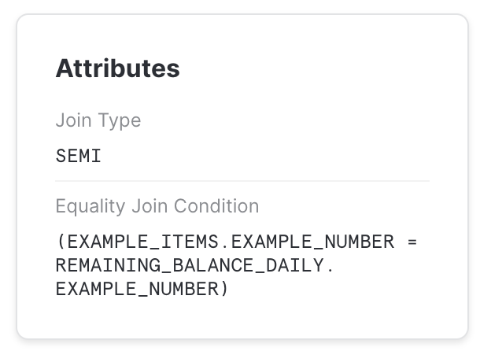

Monitor query activity with Query History¶
To monitor query activity in your account, you can use:
The Query History page in Snowsight.
The QUERY_HISTORY View in the ACCOUNT_USAGE schema of the SNOWFLAKE database.
The QUERY_HISTORY family of table functions in INFORMATION_SCHEMA.
With the Query History page in Snowsight, you can do the following:
Monitor queries executed by users in your account.
View details about queries, including performance data. In some cases, query details are unavailable.
Explore each step of an executed query in the query profile.
The Query History page lets you explore queries executed in your Snowflake account over the last 14 days.
Within a worksheet, you can see the query history for queries that have been run in that worksheet. See View query history.
Review Query History by using Snowsight¶
To access the Query History page in Snowsight, do the following:
Sign in to Snowsight.
Select Monitoring » Query History.
Filter your view to see the most relevant and accurate results.
Note
You might see incomplete or no results when you use the Query History page. This is because the page spends a maximum of 15 seconds retrieving results and returns whatever query information is available at that time. To retrieve results reliably, use filters to reduce the time it takes to retrieve results to under 15 seconds.
Privileges required to view Query History¶
You can always view history for queries that you have run.
To view history for other queries, your active role affects what else you can see in Query History:
If your active role is the ACCOUNTADMIN role, you can view all query history for the account.
If your active role has the MONITOR or OPERATE privilege granted on a warehouse, you can view queries run by other users that use that warehouse.
If your active role is granted the GOVERNANCE_VIEWER database role for the SNOWFLAKE database, you can view the query history for all users in your account. See SNOWFLAKE database roles.
If your active role is granted the READER_USAGE_VIEWER database role for the SNOWFLAKE database, you can view the query history for all users in reader accounts associated with your account. See SNOWFLAKE database roles.
Considerations for using Query History¶
When reviewing the Query History for your account, consider the following:
Details for queries executed more than 7 days ago do not include User information due to the data retention policy for sessions. You can use the user filter to retrieve queries run by individual users. See Filter Query History.
For queries that failed due to syntax or parsing errors, you see
<redacted>instead of the SQL statement that was executed. If you are granted a role with appropriate privileges, you can set the ENABLE_UNREDACTED_QUERY_SYNTAX_ERROR parameter to view the full query text.Filters and the Started and End Time columns use your current time zone. You can’t change this setting. Setting the TIMEZONE parameter for the session doesn’t change the time zone used.
Filter Query History¶
Note
You might see incomplete or no results when you use the Query History page. Use filters to help ensure reliable results.
You can filter by the following:
Status of the query, for example to identify long-running queries, failed queries, and queued queries.
User who performed the query, including:
All, to see all users for which you have access to view query history.
The user you are signed in as (default)
Individual Snowflake users in your account, if your role can view query history for other users.
Time period during which the query was run, up to 14 days.
Other filters, including the following:
SQL Text, for example, to view queries that use specific statements, such as GROUP BY.
Query ID, to view details for a specific query.
Warehouse, to view queries that were run using a specific warehouse.
Statement Type, to view queries that used a specific type of statement, such as DELETE, UPDATE, INSERT, or SELECT.
Duration, for example, to identify especially long-running queries.
Session ID, to view queries run during a specific Snowflake session.
Query Tag, to view queries with a specific query tag set through the QUERY_TAG session parameter.
Client generated statements, to view internal queries run by a client, driver, or library, including the web interface. For example, whenever a user navigates to the Warehouses page in Snowsight, Snowflake executes a SHOW WAREHOUSES statement in the background. That statement would be visible when this filter is enabled. Your account is not billed for client-generated statements.
Queries executed by user tasks, to view SQL statements executed or stored procedures called by user tasks.
Show replication refresh history, to view queries used to perform replication refresh tasks to remote regions and accounts.
If you want to see near-real-time results, enable Auto Refresh. When Auto Refresh is enabled, the table refreshes every ten seconds.
You can see the following columns in the Queries table by default:
SQL Text, the text of the executed statement (always shown).
Query ID, the ID of the query (always shown).
Status, the status of the executed statement (always shown).
User, to see the username that executed a statement.
Warehouse, to see the warehouse used to execute a statement.
Duration, to see the length of time it took to execute a statement.
Started, to see the time a statement started running.
If you have fewer than 1000 results, you can select a column header to sort the table. If you have more results, you cannot sort the table.
To view more specific information, you can select Columns to add or remove columns from the table, such as:
All to display all columns.
End Time to display the end time of the statement.
Session ID to display the ID of the session that executed the statement.
Client Driver to display the name and version of the client, driver, or library used to execute the statement. Statements run in Snowsight display
Go 1.1.5.Bytes Scanned to display the number of bytes scanned during the processing of the query.
Rows to display the number of rows returned by a statement.
Query Tag to display the query tag set for a query.
Warehouse Size to display the size of the warehouse used to run the statement.
Incident to display details for statements with an execution status of incident, used for troubleshooting or debugging purposes.
To view additional details about a query, select a query in the table to open the Query Details.
Review details and profile of a specific query¶
When you select a query in Query History, you can review details and the profile of the query.
Query Profile data redacted from a Snowflake Native App¶
The Snowflake Native App Framework redacts information from the query profile in the following contexts:
Queries that are run when the app is installed or upgraded.
Queries that originate from a stored procedure owned by the app.
Queries containing a non-secure view or function owned by the app.
For each of these types of queries, Snowsight collapses the query profile data into a single empty node instead of displaying the full query profile tree.
Review Query Details¶
To review the details of a specific query, and view the results of a successful query, open the Query Details for a query.
You can review the Details for information about the query execution, including:
The status of the query.
When the query started, in the user’s local timezone.
When the query ended, in the user’s local timezone.
The size of the warehouse used to run the query.
The duration of the query.
The query ID.
The query tag for the query, if one exists.
The driver status. For more details, see Viewing Snowflake Client Versions.
The name and version of the client, driver, or library used to submit the query. For example,
Go 1.1.5for queries run using Snowsight.The session ID.
You can see the warehouse used to run the query and the user who ran the query listed above the Query Details tab.
Review the SQL Text section for the actual text of the query. You can hover over the SQL text to open the statement in a worksheet or copy the statement. If the query failed, you can review the error details.
The Results section displays the results of the query. You can only view the first 10,000 rows of results, and only the user who ran the query can view the results. Select Export Results to export the full set of results as a CSV-formatted file.
Review Query Profile¶
The Query Profile tab lets you explore the query execution plan and understand granular details about each step of execution.
The query profile is a powerful tool for understanding the mechanics of queries. It can be used whenever you need to know more about the performance or behavior of a particular query. It is designed to help you spot typical mistakes in SQL query expressions to identify potential performance bottlenecks and improvement opportunities.
This section provides a brief overview of how to navigate and use the query profile.
Interface |
Description |
|---|---|

Query execution plan |
The query execution plan appears at the center of the query profile. The query execution plan is composed of operator nodes, which represent rowset operators. Arrows between operator nodes indicate the rowsets that flow out of one operator and into another. |

Operator node |
Each operator node includes the following:
|
In the upper-left corner of the query profile, use the buttons to:
Note Steps only appear if the query was executed in steps. |
|

Information panes |
The query profile provides various information panes. The panes appear in the query execution plan. The panes that appear depend on the focus of the query execution plan. The query profile includes the following information panes:
To learn more about the information provided by the panes, see Query Profile reference. |
{kind=link}
{kind=link}
{kind=link}
{kind=link}
Query History Data Redacted from a Snowflake Native App¶
For queries related to a Snowflake Native App, the query_text and error_message fields are redacted
from the query history in the following contexts:
Queries run when the app is installed or upgraded.
Queries that originate from a child job of a stored procedure owned by the app.
In each of these situations, the cell of the query history in Snowsight appears blank.
Query Profile reference¶
This section describes all items that can appear in each information pane. The exact content of the information panes depends on the context of the query execution plan.
Profile overview¶
The pane provides information about which processing tasks consumed query time. Execution time provides information about “where the time was spent” during the processing of a query. Time spent can be broken down into the following categories:
Processing — time spent on data processing by the CPU.
Local Disk IO — time when the processing was blocked by local disk access.
Remote Disk IO — time when the processing was blocked by remote disk access.
Network Communication — time when the processing was waiting for the network data transfer.
Synchronization — various synchronization activities between participating processes.
Initialization — time spent setting up the query processing.
Statistics¶
A major source of information provided in the detail pane is the various statistics, grouped in the following sections:
IO — information about the input-output operations performed during the query:
Scan progress — the percentage of data scanned for a given table so far.
Bytes scanned — the number of bytes scanned so far.
Percentage scanned from cache — the percentage of data scanned from the local disk cache.
Bytes written — bytes written (e.g. when loading into a table).
Bytes written to result — bytes written to the result object. For example,
select * from . . .would produce a set of results in tabular format representing each field in the selection. In general, the results object represents whatever is produced as a result of the query, and Bytes written to result represents the size of the returned result.Bytes read from result — bytes read from the result object.
External bytes scanned — bytes read from an external object, e.g. a stage.
DML — statistics for Data Manipulation Language (DML) queries:
Number of rows inserted — number of rows inserted into a table (or tables).
Number of rows updated — number of rows updated in a table.
Number of rows deleted — number of rows deleted from a table.
Number of rows unloaded — number of rows unloaded during data export.
Pruning — information on the effects of table pruning:
Partitions scanned — number of partitions scanned so far.
Partitions total — total number of partitions in a given table.
Spilling — information about disk usage for operations where intermediate results do not fit in memory:
Bytes spilled to local storage — volume of data spilled to local disk.
Bytes spilled to remote storage — volume of data spilled to remote disk.
Network — network communication:
Bytes sent over the network — amount of data sent over the network.
External Functions — information about calls to external functions:
The following statistics are shown for each external function called by the SQL statement. If the same function was called more than once from the same SQL statement, then the statistics are aggregated.
Total invocations — number of times that an external function was called. (This can be different from the number of external function calls in the text of the SQL statement due to the number of batches that rows are divided into, the number of retries (if there are transient network problems), etc.)
Rows sent — number of rows sent to external functions.
Rows received — number of rows received back from external functions.
Bytes sent (x-region) — number of bytes sent to external functions. If the label includes “(x-region)”, the data was sent across regions (which can impact billing).
Bytes received (x-region) — number of bytes received from external functions. If the label includes “(x-region)”, the data was sent across regions (which can impact billing).
Retries due to transient errors — number of retries due to transient errors.
Average latency per call — average amount of time per invocation (call) between the time Snowflake sent the data and received the returned data.
HTTP 4xx errors — total number of HTTP requests that returned a 4xx status code.
HTTP 5xx errors — total number of HTTP requests that returned a 5xx status code.
Latency per successful call (avg) — average latency for successful HTTP requests.
Avg throttle latency overhead — average overhead per successful request due to a slowdown caused by throttling (HTTP 429).
Batches retried due to throttling — number of batches that were retried due to HTTP 429 errors.
Latency per successful call (P50) — 50th percentile latency for successful HTTP requests. 50 percent of all successful requests took less than this time to complete.
Latency per successful call (P90) — 90th percentile latency for successful HTTP requests. 90 percent of all successful requests took less than this time to complete.
Latency per successful call (P95) — 95th percentile latency for successful HTTP requests. 95 percent of all successful requests took less than this time to complete.
Latency per successful call (P99) — 99th percentile latency for successful HTTP requests. 99 percent of all successful requests took less than this time to complete.
Extension Functions — information about calls to extension functions:
Java UDF handler load time — amount of time for the Java UDF handler to load.
Total Java UDF handler invocations — number of times the Java UDF handler is invoked.
Max Java UDF handler execution time — maximum amount of time for the Java UDF handler to execute.
Avg Java UDF handler execution time — average amount of time to execute the Java UDF handler.
Java UDTF process() invocations — number of times the Java UDTF process method was invoked.
Java UDTF process() execution time — amount of time to execute the Java UDTF process.
Avg Java UDTF process() execution time — average amount of time to execute the Java UDTF process.
Java UDTF’s constructor invocations — number of times the Java UDTF constructor was invoked.
Java UDTF’s constructor execution time — amount of time to execute the Java UDTF constructor.
Avg Java UDTF’s constructor execution time — average amount of time to execute the Java UDTF constructor.
Java UDTF endPartition() invocations — number of times the Java UDTF endPartition method was invoked.
Java UDTF endPartition() execution time — amount of time to execute the Java UDTF endPartition method.
Avg Java UDTF endPartition() execution time — average amount of time to execute the Java UDTF endPartition method.
Max Java UDF dependency download time — maximum amount of time to download the Java UDF dependencies.
Max JVM memory usage — peak memory usage as reported by the JVM.
Java UDF inline code compile time in ms — compile time for the Java UDF inline code.
Total Python UDF handler invocations — number of times the Python UDF handler was invoked.
Total Python UDF handler execution time — total execution time for Python UDF handler.
Avg Python UDF handler execution time — average amount of time to execute the Python UDF handler.
Python sandbox max memory usage — peak memory usage by the Python sandbox environment.
Avg Python env creation time: Download and install packages — average amount of time to create the Python environment, including downloading and installing packages.
Conda solver time — amount of time to run the Conda solver to solve Python packages.
Conda env creation time — amount of time to create the Python environment.
Python UDF initialization time — amount of time to initialize the Python UDF.
Number of external file bytes read for UDFs — number of external file bytes read for UDFs.
Number of external files accessed for UDFs — number of external files accessed for UDFs.
If the value of a field, for example “Retries due to transient errors”, is zero, then the field is not displayed.
Most Expensive Nodes¶
The pane lists all nodes that lasted for 1% or longer of the total execution time of the query (or the execution time for the displayed query step, if the query was executed in multiple processing steps). The pane lists nodes by execution time in descending order, enabling users to quickly locate the costliest operator nodes in terms of execution time.
Attributes¶
The following sections provide a list of the most common operator types and their attributes:
Data access and generation operators¶
- TableScan:
Represents access to a single table. Attributes:
Full table name — the name of the accessed table, including database and schema.
Columns — list of scanned columns
Table alias — used table alias, if present
Extracted Variant paths — list of paths extracted from VARIANT columns
- ValuesClause:
List of values provided with the VALUES clause. Attributes:
Number of values — the number of produced values.
Values — the list of produced values.
- Generator:
Generates records using the
TABLE(GENERATOR(...))construct. Attributes:rowCount — provided rowCount parameter.
timeLimit — provided timeLimit parameter.
- ExternalScan:
Represents access to data stored in stage objects. Can be a part of queries that scan data from stages directly, but also for data loading operations (i.e. COPY statements).
Attributes:
Stage name — the name of the stage where the data is read from.
Stage type — the type of the stage (e.g. TABLE STAGE).
- InternalObject:
Represents access to an internal data object (e.g. an Information Schema table or the result of a previous query). Attributes:
Object Name — the name or type of the accessed object.
Data processing operators¶
- Filter:
Represents an operation that filters the records. Attributes:
Filter condition - the condition used to perform filtering.
- Join:
Combines two inputs on a given condition. Attributes:
Join Type — Type of join (e.g. INNER, LEFT OUTER, etc.).
Equality Join Condition — for joins which use equality-based conditions, it lists the expressions used for joining elements.
Additional Join Condition — some joins use conditions containing non-equality based predicates. They are listed here.
Note
Non-equality join predicates might result in significantly slower processing speeds and should be avoided if possible.
- Aggregate:
Groups input and computes aggregate functions. Can represent SQL constructs such as GROUP BY, as well as SELECT DISTINCT. Attributes:
Grouping Keys — if GROUP BY is used, this lists the expressions we group by.
Aggregate Functions — list of functions computed for each aggregate group, e.g. SUM.
- GroupingSets:
Represents constructs such as GROUPING SETS, ROLLUP and CUBE. Attributes:
Grouping Key Sets — list of grouping sets
Aggregate Functions — list of functions computed for each group, e.g. SUM.
- WindowFunction:
Computes window functions. Attributes:
Window Functions — list of window functions computed.
- Sort:
Orders input on a given expression. Attributes:
Sort keys — expression defining the sorting order.
- SortWithLimit:
Produces a part of the input sequence after sorting, typically a result of an
ORDER BY ... LIMIT ... OFFSET ...construct in SQL.Attributes:
Sort keys — expression defining the sorting order.
Number of rows — number of rows produced.
Offset — position in the ordered sequence from which produced tuples are emitted.
- Flatten:
Processes VARIANT records, possibly flattening them on a specified path. Attributes:
input — the input expression used to flatten the data.
- JoinFilter:
Special filtering operation that removes tuples that can be identified as not possibly matching the condition of a Join further in the query plan. Attributes:
Original join ID — the join used to identify tuples that can be filtered out.
- UnionAll:
Concatenates two inputs. Attributes: none.
- ExternalFunction:
Represents processing by an external function.
DML operators¶
- Insert:
Adds records to a table either through an INSERT or COPY operation. Attributes:
Input expressions — which expressions are inserted.
Table names — names of tables that records are added to.
- Delete:
Removes records from a table. Attributes:
Table name — the name of the table that records are deleted from.
- Update:
Updates records in a table. Attributes:
Table name — the name of the updated table.
- Merge:
Performs a MERGE operation on a table. Attributes:
Full table name — the name of the updated table.
- Unload:
Represents a COPY operation that exports data from a table into a file in a stage. Attributes:
Location - the name of the stage where the data is saved.
Metadata operators¶
Some queries include steps that are pure metadata/catalog operations rather than data-processing operations. These steps consist of a single operator. Some examples include:
- DDL and Transaction Commands:
Used for creating or modifying objects, session, transactions, etc. Typically, these queries are not processed by a virtual warehouse and result in a single-step profile that corresponds to the matching SQL statement. For example:
CREATE DATABASE | SCHEMA | …
ALTER DATABASE | SCHEMA | TABLE | SESSION | …
DROP DATABASE | SCHEMA | TABLE | …
COMMIT
- Table Creation Command:
DDL command for creating a table. For example:
CREATE TABLE
Similar to other DDL commands, these queries result in a single-step profile; however, they can also be part of a multi-step profile, such as when used in a CTAS statement. For example:
CREATE TABLE … AS SELECT …
- Query Result Reuse:
A query that reuses the result of a previous query.
- Metadata-based Result:
A query whose result is computed based purely on metadata, without accessing any data. These queries are not processed by a virtual warehouse. For example:
SELECT COUNT(*) FROM …
SELECT CURRENT_DATABASE()
Miscellaneous operators¶
- Result:
Returns the query result. Attributes:
List of expressions - the expressions produced.
Common query problems identified by Query Profile¶
This section describes some of the problems you can identify and troubleshoot using Query Profile.
“Exploding” joins¶
One of the common mistakes SQL users make is joining tables without providing a join condition (resulting in a “Cartesian product”), or providing a condition where records from one table match multiple records from another table. For such queries, the Join operator produces significantly (often by orders of magnitude) more tuples than it consumes.
This can be observed by looking at the number of records produced by a Join operator, and typically is also reflected in Join operator consuming a lot of time.
UNION without ALL¶
In SQL, it is possible to combine two sets of data with either UNION or UNION ALL constructs. The difference between them is that UNION ALL simply concatenates inputs, while UNION does the same, but also performs duplicate elimination.
A common mistake is to use UNION when the UNION ALL semantics are sufficient. These queries show in Query Profile as a UnionAll operator with an extra Aggregate operator on top (which performs duplicate elimination).
Queries too large to fit in memory¶
For some operations (e.g. duplicate elimination for a huge data set), the amount of memory available for the servers used to execute the operation might not be sufficient to hold intermediate results. As a result, the query processing engine will start spilling the data to local disk. If the local disk space is not sufficient, the spilled data is then saved to remote disks.
This spilling can have a profound effect on query performance (especially if remote disk is used for spilling). To alleviate this, we recommend:
Using a larger warehouse (effectively increasing the available memory/local disk space for the operation), and/or
Processing data in smaller batches.
Inefficient pruning¶
Snowflake collects rich statistics on data allowing it not to read unnecessary parts of a table based on the query filters. However, for this to have an effect, the data storage order needs to be correlated with the query filter attributes.
The efficiency of pruning can be observed by comparing Partitions scanned and Partitions total statistics in the TableScan operators. If the former is a small fraction of the latter, pruning is efficient. If not, the pruning did not have an effect.
Of course, pruning can only help for queries that actually filter out a significant amount of data. If the pruning statistics do not show data reduction, but there is a Filter operator above TableScan which filters out a number of records, this might signal that a different data organization might be beneficial for this query.
For more information about pruning, see Understanding Snowflake Table Structures.